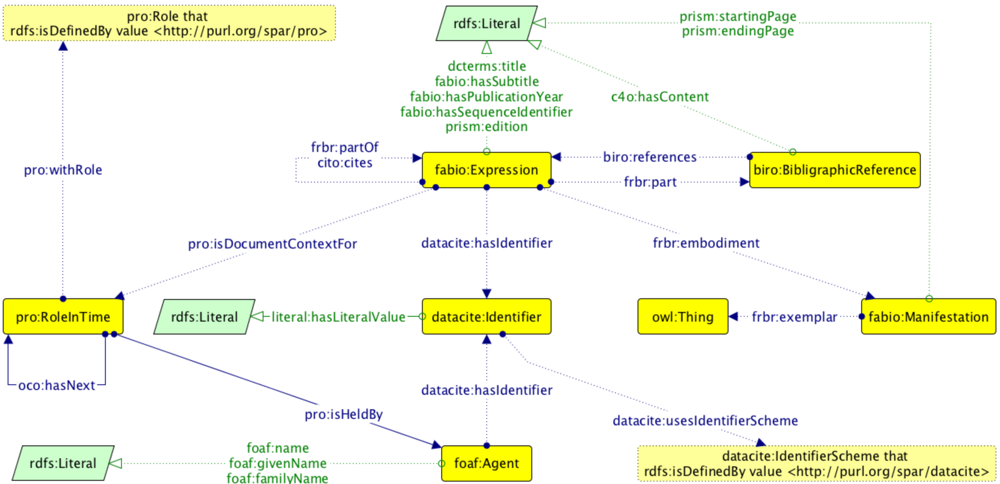
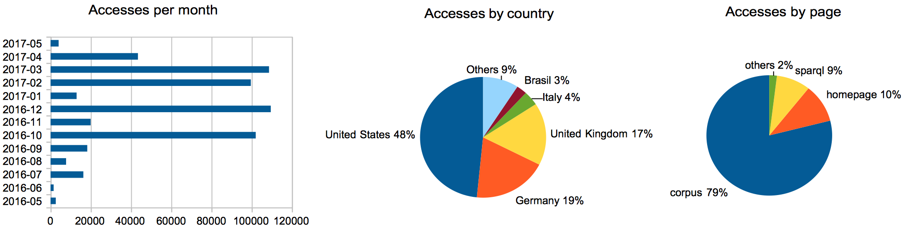
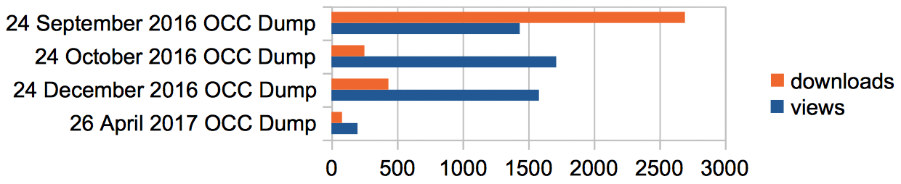
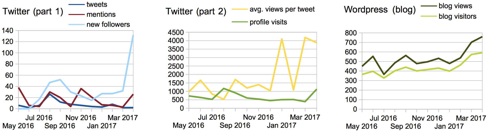

Reference lists from academic articles are core elements of scholarly communication that permit the attribution of credit and integrate our independent research endeavours. Hitherto, however, they have not been freely available in an appropriate machine-readable format such as RDF and in aggregate for use by scholars. To address this issue, one year ago we started ingesting citation data from the Open Access literature into the OpenCitations Corpus (OCC), creating an RDF dataset of scholarly citation data that is open to all. In this paper we introduce the OCC and we discuss its outcomes and uses after the first year of life.
Notes: postprint accepted to the Resource Track of the 16th International Semantic Web Conference.
This version: https://w3id.org/people/essepuntato/papers/oc-iswc2017/2017-07-28.html
Last version: https://w3id.org/people/essepuntato/papers/oc-iswc2017.html
The availability of open citation data has been recently recognised as an important objective for the scholarly community at large. One of the most important movements in this direction has been the recently launched Initiative for Open Citations (I4OC, https://i4oc.org). The premise of this initiative has been the fact that, while citations are unanimously recognised as crucial for knitting together our scientific and cultural knowledge, regrettably they are mostly not freely accessible. Rather, the best citation databases charge high subscription rates, and are oriented towards human readability rather than machine readability and data re-use. In response to this situation, I4OC has established a collaboration between scholarly publishers, researchers, and other interested parties to promote the unrestricted availability of scholarly citation data, initially by encouraging scholarly publishers to make open the article reference lists they already deposit to Crossref. This initiative has achieved massive initial success, with almost all the major scientific publishers now opening their reference lists in this way.
Among the I4OC founders, one specific organization, OpenCitations , has the objective of employing Semantic Web technologies to create an open repository of the citation data that publishers have made available. In this paper, we introduce the main service developed by that organization, namely the OpenCitations Corpus (OCC), an open repository of RDF-based scholarly citation data (obtained by parsing the articles included in the PubMed Central Open Access subset), made freely available so that others may use and build upon them. All the resources published by OpenCitations – namely the data within the OCC, the ontologies describing the data, and the software developed to build the OCC – are available to the public with open licenses. In particular, the OCC strictly follows the FAIR principles for data-intensive science, namely that the data should be findable, accessible, interoperable, and re-usable , and employs the three basic criteria promoted by I4OC, namely that the citation data must be structured, separable, and open (https://i4oc.org/#goals).
The rest of this paper is structured as follows. In , we introduce some of the most important related works in the area. In , we briefly introduce the models and tools used to create the OCC, explain which data it contains, and summarize the nature of the services used for the automatic ingestion of citation data. In , we present descriptive statistics about the OpenCitations Corpus almost one year since its launch, to show its impact to the scholarly community at large. Finally, in , we summarize and outline future developments.
In recent years we have seen a growing interest within the Semantic Web community for creating and making available RDF datasets concerning the bibliographic metadata of scholarly documents.
Semantic Lancet aims at building a Linked Open Data (LOD) dataset of scholarly publication metadata starting from articles published by Elsevier. In particular, the current dataset contains SPAR-based metadata about several papers published in the Journal of Web Semantics, including citation links marked with the motivations justifying them using CiTO properties.
WikiCite is a proposal, with a related series of workshops, which aims at building a bibliographic database in Wikidata to serve all Wikimedia projects. As of 30 April 2017, Wikidata contains around 3,000,000 citation links between bibliographic resources.
The Springer Nature SciGraph is a new (LOD) platform aggregating data sources from Springer Nature and other partners, and it contains data about funders, research projects, conferences, affiliations and publications.
Springer LOD is an RDF dataset made available by Springer Nature that publishes Springer metadata about conferences as LOD. Its main focus is on proceedings volumes and the related conferences, but it does not contain metadata describing the individual articles within such proceedings.
OpenAIRE is an Horizon 2020 open data project which publishes metadata of more than 14,000,000 of publications and thousands of datasets, but does not include their citations. It makes available a mechanism for searching, discovering and monitoring scientific outputs.
Finally, Scholarly Data is a project that refactors the Semantic Web Dog Food so as to keep the dataset growing in good health, and that has adopted the new ontology (aligned with other existing models, including the SPAR Ontologies ), for describing the data.
OpenCitations (http://opencitations.net) formally started in 2010 as a one-year Open Citations Project at the University of Oxford, that was funded by JISC and subsequently extended for an additional half year. The main goal of the project was the creation of a collection of open citation data called the OpenCitations Corpus (OCC), harvested from the open access literature in PubMed Central and made available in RDF. To our knowledge, it was the first RDF-based dataset of open citation data. At the end of 2015, a formal collaboration between the University of Oxford and the University of Bologna was initiated to build from that initial Oxford prototype by setting up a new instantiation of the OCC based on a revised metadata schema and employing several new technologies to automate the daily ingestion of fresh citation metadata from authoritative sources. The OCC is now the largest truly open collection of RDF-based citation data available on the Web.
This new instantiation of the OCC holds accurate scholarly citation data derived from bibliographic references harvested from the scholarly literature, and makes them available under a Creative Commons public domain dedication (CC0). These are described using the SPAR Ontologies and other standard vocabularies according to the OCC metadata document that is briefly summarized in , and are implemented by means of the OpenCitations Ontology (OCO, https://w3id.org/oc/ontology). OCO is not yet another bibliographic ontology, but rather simply a mechanism for grouping together existing complementary ontological entities from several other ontologies, for the purpose of providing descriptive metadata for the OCC all in one place. Specifically, it provides a way to describe the citing/cited bibliographic resources (conference papers, book chapters, journal articles, etc.) and their containers (academic proceedings, books, journals, etc.), the formats in which they have been embodied (digital vs. print, first and ending pages, etc.), the roles of relevant bibliographic agents (author, editor, publisher, etc.) related to the bibliographic resources, the textual content of each reference in the reference list of a citing bibliographic resource, all the identifiers (e.g. DOI, PubMed ID, PubMed Central ID, ORCID, ISSN, etc.) for the bibliographic resources and the agents involved, and the names of those agents such as their given and family names. A detailed description of the whole model is given in .

The OCC stores all the aforementioned metadata in RDF. The corpus URL (https://w3id.org/oc/corpus/) identifies the entire OCC, which is composed of several sub-datasets, one for each of following kinds of bibliographic entities included in the corpus: bibliographic resources (br
, identified by the class fabio:Expression), resource embodiments (re
, class fabio:Manifestation), bibliographic entries (be
, class fabio:BibliographicReference), responsible agents (ra
, class foaf:Agent), agent roles (ar
, class pro:RoleInTime), and identifiers (id
, class datacite:Identifier). Each of these has a URL composed by suffixing the corpus URL with the two-letter short name for the class of entity (e.g. be
for a bibliographic entry) followed by an oblique slash (e.g. https://w3id.org/oc/corpus/be/). Each dataset is described appropriately by means of the Data Catalog Vocabulary and the VoID Vocabulary.
The ingestion of new data into the OCC is curated by two Python scripts, the Bibliographic Entries Extractor, a.k.a. BEE, and the SPAR Citation Indexer, a.k.a. SPACIN. Both of these are available on the OpenCitations GitHub repository (https://github.com/essepuntato/opencitations) and are released as open source code according to the ISC Licence. BEE is responsible for the creation of JSON files containing reference lists from articles in the OA subset of PubMed Central (retrieved by using the Europe PubMed Central API). SPACIN processes each JSON file created by BEE, retrieves additional metadata information about all the citing/cited articles described in it by querying the Crossref API and the ORCID API, and finally stores all the data in the OCC triplestore, which is a Blazegraph instance that makes available a SPARQL endpoint with the full text search enabled for all the entities included in the entire OCC.
Upon initial curation into the OCC, a URL is assigned to each entity within each sub-dataset, which via content negotiation can be accessed in different formats (HTML, RDF/XML, Turtle, and JSON-LD). Each entity URL is composed by suffixing the sub-dataset URL with a number assigned to each resource, unique among resources of the same type, which increments for each new entry added to that resource class. For instance, the resource https://w3id.org/oc/corpus/be/537 is the 537th bibliographic entry recorded within the OCC. Each of these entities has associated metadata describing its provenance using PROV-O and its PROV-DC extension (e.g. https://w3id.org/oc/corpus/be/537/prov/se/1). In particular, we keep track of the curatorial activities related to each OCC entity, the curatorial agents involved, and their roles, as described in .
In addition to being accessible via a SPARQL interface, all the OCC data are also made available as data dumps, which are created monthly and are stored online by means of the support of Figshare. Each dump is composed of several zip archives, each containing either data or provenance information, stored in JSON-LD, relating to a particular sub-dataset within the OCC. We decided to use JSON-LD as storing format in order to make the OCC data easily comprehensible also to Web-developer and researcher with no expertise in Semantic Web technologies and formats. In addition, one of these archives includes the whole triplestore for easy reuse (e.g. the April 2017 dump of the entire OCC triplestore – approx. 16 Gbytes of zipped data – is available at ). As introduced by an appropriate README file included in each archive, after unzipping it, one needs to use Disk ARchive (DAR) – a multi-platform archive tool for managing huge amounts of data – to recreate the entire OCC structure. It has been also produced a single n-quad file of the whole OCC of the April 2017 dump (approx. 12 Gbytes of zipped data) that is available at .
The intended goal of the new instantiation of the OCC, which started data acquisition in early July 2016, was to ingest around five hundred thousand new citation links per month, so as to reach the goal of 6,000,000 citation links after one year of processing, as anticipated in . As of 15 May 2017, the OCC has ingested the references from 150,000 citing bibliographic resources, and it contains information about 6,500,000 citation links to more than 4,000,000 cited resources – thus achieving our original goal in only ten months. Since May 2016, the OpenCitations website has been accessed more than 540,000 times (as of 8 May 2017) by users from several countries (identified by IP address of the request), as shown in . It is worth mentioning that the pages related to the data available and the services for querying them (i.e. corpus
and sparql
portions of the right-most pie chart in ) have together gained a very high percentage of the overall accesses (i.e. 88%), showing that the main reason people access the OpenCitations website is to explore and use the data in the OCC. These statistics provide clear evidence of the interest that the scholarly communication community is showing in OpenCitations.

In , we show the statistics (as of 8 May 2017) concerning the OCC data dumps that have been made available on Figshare. With the exception of the first dump we released on 24 September 2016, where the archive containing the entire triplestore has been downloaded over 2,500 times (probably by several software agents via the Figshare APIs), the absolute numbers of downloads show an increasing trend with time, while the percentage of the users visiting the OCC data dumps on Figshare who also download the datasets is also increasing for the most recent dumps.

We have also analysed the statistics related to the OpenCitations social web resources, namely the OpenCitations Twitter account (https://twitter.com/opencitations) and the OpenCitations Blog on Wordpress (https://opencitations.wordpress.com). As shown in , there is a clear increase in usage following the 6 April 2017 launch of the Initiative for Open Citations, of which OpenCitations is a founding member.

In addition to the aforementioned evidences of interest in OpenCitations within the global scholarly community, the citation data provided by the OCC are being used by a number of independent international projects, among which are Wikidata, OpenAIRE, and LOC-DB. In particular, the first includes the property OpenCitations bibliographic resource ID when linking Wikidata resources to those included in the OCC; the second is in the process of re-publishing within their database all the article metadata included in the December 2016 dump of the OCC; while the third is using the OpenCitations data model for modelling their citation data. This demonstrates reuse by those projects of the metadata structures developed for OpenCitations and the citation data produced by the OpenCitations ingestion workflow. It is worth mentioning that the OCC resources have been made available and accessible in different ways, so as to facilitate their reuse in different contexts: as monthly dumps (http://opencitations.net/download), via the SPARQL endpoint (https://w3id.org/oc/sparql), and by accessing them directly by means of the HTTP URIs of the stored resources (via content negotiation, e.g. https://w3id.org/oc/corpus/br/1).
The data collected by the new instantiation of the OCC since its start in July 2016, and available in the dump made on 26 April 2017, are summarized in .
| Entity type | Number of entities in the OCC |
|---|---|
|
Bibliographic resource (br) |
5.4 millions |
|
Resource embodiment (re) |
3.1 millions |
|
Bibliographic entries (be) |
6.5 millions |
|
Responsible agents (ra) |
16.7 millions |
|
Agent roles (ar) |
21.2 millions |
|
Identifiers (id) |
11 millions |
In this paper we have introduced the OpenCitations Corpus (OCC), which is an open repository of RDF-based scholarly citation data. All the data included in the OCC are made available under a Creative Commons CC0 Public Domain dedication, while the other resources used for building the OCC (software, documentation, etc.) are also made available to the public with appropriate open licenses. The initial sustainability of this new instantiation of the OCC was made possible using the IT services of the Department of Computer Science and Engineering of the University of Bologna, to whom we are most grateful. We have now received funding from the Alfred P. Sloan Foundation, which will enable us substantially to extend the current infrastructure and the rate of data ingest. Our immediate goal is to increment the daily ingestion of citation data from 500,000 citations per month to 500,000 per day. In addition, we plan to extend the scripts developed so as to add links to to external datasets, to analyse the OCC so as to understand the quality of its current data, and to develop new user interfaces that will expand the means whereby users can interact with the OpenCitations data.
We would like to thank all the reviewers for having provided useful comments and desiderata to include in OpenCitations Corpus. Their suggestions have been already added as issues in the GitHub repository (see issues 11-19) and they will be taken into consideration as future developments of the resource.
Bagnacani, A., Ciancarini, P., Di Iorio, A., Nuzzolese, A. G., Peroni, S., Vitali, F. (2014). The Semantic Lancet Project: A Linked Open Dataset for Scholarly Publishing. In EKAW 2014 Satellite Events: 101–105. https://doi.org/10.1007/978-3-319-17966-7_10
Alexiou, G., Vahdati, S., Lange, C., Papastefanatos G., Lohmann, S. (2016). OpenAIRE LOD services: Scholarly Communication Data as Linked Data. Proceedings of SAVE-SD 2016: 45–50. https://doi.org/10.1007/978-3-319-53637-8_6
Peroni, S., Shotton, D. (2016). Metadata for the OpenCitations Corpus. Figshare. https://doi.org/10.6084/m9.figshare.3443876
Peroni, S., Dutton, A., Gray, T., Shotton, D. (2015). Setting our bibliographic references free: towards open citation data. Journal of Documentation, 71 (2): 253–277. https://doi.org/10.1108/JD-12-2013-0166
Peroni, S. (2014). The Semantic Publishing and Referencing Ontologies. In Semantic Web Technologies and Legal Scholarly Publishing: 121–193. https://doi.org/10.1007/978-3-319-04777-5_5
Nuzzolese, A. G., Gentile, A. L., Presutti, V., Gangemi, A. (2016). Conference Linked Data: The ScholarlyData Project. In Proceedings of ISWC 2016: 150–158. DOI: https://doi.org/10.1007/978-3-319-46547-0_16
Bryl, V., Birukou, A., Eckert, K., Kessler, M. (2014). What's in the proceedings? Combining publisher's and researcher's perspectives. In Proceedings of SePublica 2014. http://ceur-ws.org/Vol-1155/paper-01.pdf
Shotton, D. (2013). Open Citations. Nature, 502 (7471): 295–297. https://doi.org/10.1038/502295a
Falco, R., Gangemi, A., Peroni, S., Vitali, F. (2014). Modelling OWL ontologies with Graffoo. In The Semantic Web: ESWC 2014 Satellite Events: 320–325. https://doi.org/10.1007/978-3-319-11955-7_42
Peroni, S., Shotton, D., Vitali, F. (2016). Freedom for bibliographic references: OpenCitations arise. In Proceedings of LD4IE 2016: 32–43. http://ceur-ws.org/Vol-1699/paper-05.pdf
Peroni, S., Shotton, D., Vitali, F. (2016). A document-inspired way for tracking changes of RDF data – The case of the OpenCitations Corpus. In Proceedings of Drift-a-LOD 2016: 26–33. http://ceur-ws.org/Vol-1799/Drift-a-LOD2016_paper_4.pdf
OpenCitations (2017). The entire OCC triplestore data dump, made on 26 April 2017. figshare. DOI: https://doi.org/10.6084/m9.figshare.4959869
Wilkinson, M. D., Dumontier, M., Aalbersberg, I. J., Appleton, G., et al. (2016). The FAIR Guiding Principles for scientific data management and stewardship. Scientific Data 3. DOI: https://doi.org/10.1038/sdata.2016.18
OpenCitations (2017). The entire OCC n-quads data dump, made on 26 April 2017. figshare. DOI: https://doi.org/10.6084/m9.figshare.5147068
An example of these JSON files is introduced at http://opencitations.net/corpus.
We have excluded from this list the hits done by well-known spiders and crawlers – e.g. Google crawlers.